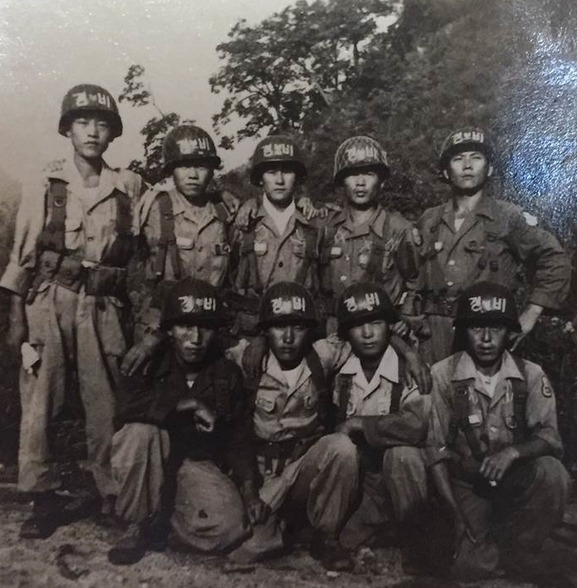

SNS 기사보내기페이스북(으)로 기사보내기 트위터(으)로 기사보내기 카카오스토리(으)로 기사보내기 URL복사(으)로 기사보내기 이메일(으)로 기사보내기 다른 공유 찾기 기사스크랩하기 [73주년 국군의 날] 6.25참전용사 최남규씨, 가족에 나라사랑 강조 3대 9명 모두 현역복무…복무기간만 221개월 군복무 중 부상 제대 손자 “군생활 후회 없어
［동양일보 이도근 기자］국군의 날을 맞아 할아버지부터 손자까지 3대 가족이 모두 성실히 병역의무를 이행하는 ‘병역명문가’에 대한 관심이 커지고 있다. 충북지역 병역명문가 최남규씨 가문의 이야기는 73주년 국군의 날을 맞아 나라사랑의 의미와 고마움을 다시 한 번 생각하게 한다. 출처 : 동양일보 '이땅의 푸른 깃발'(http://www.dynews.co.kr)
